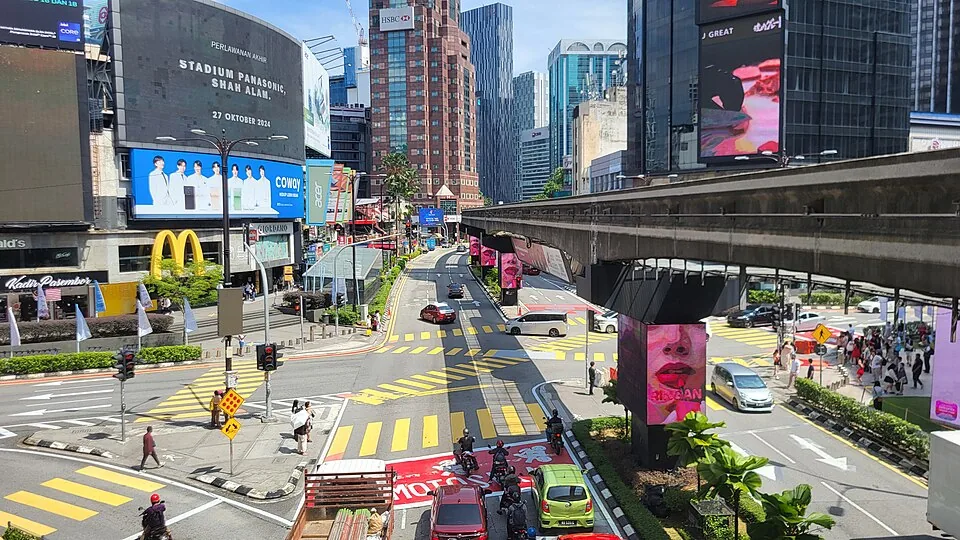

11月先看申请窗口，12月核新条件
MDEC于10月29日公告，新申请在11月1–30日暂停，计划12月1日恢复。增强框架FAQ说明，12月1日起提交的科技类新申请和续签，年收入门槛由24,000美元升至36,000美元，非科技类仍60,000美元。符合条件的持有人经逐次审批，最多可合计停留4年；续签不自动获批，也不提供永居通道。
11月仍受理的首次续签限初次12个月准证于2027年1月31日或之前到期者，并须按规定时段提交完整材料。第二、三次续签从12月1日起开放。已有准证保留原批准条件至到期，续签按提交时规则审查。以下材料表保留10月22日核读范围，不能当成本次重新确认的12月完整清单。
雇员先把三种关系说明白
MDEC雇员表的定义是受雇于未在马来西亚注册的境外公司，工作不绑定实体办公室，安排允许灵活远程履职。合同须说明远程安排、职位职责、期限、薪酬及雇主资料；表中将申请时已开始雇佣至少三个月列为条件，同时用建议措辞说明合同最好从申请日起仍有效至少六个月，不能把“最好”改成硬性要求。
表中还要求最近三个月工资单与能对应入账的银行流水，并列护照全部页面、至少十四个月有效期及六页空白页等。雇主确认信属于可选但强烈建议，不是保证批准的特殊文件。假设你刚入职两周，即使有余额和合同，也不能跳过已开始履职三个月这一项；应先核是否符合当前规则再安排付款。


自由职业者整理的是交付链
10月22日已读的MDEC自由职业者表列出签署的客户合同或自由职业协议，客户可在境外或马来西亚，需明确服务范围、期限与付款条件。与雇员的工资单不同，自由职业者要提供近三个月开出的发票、实际收款证明及近三个月银行流水。表中还提示雇佣或服务合同在提交前至少已开始三个月，不能只拿尚未履行的新合同代替记录。
作品集、网站或客户评价属可选但建议；数字营销岗位的营销报告或作品则有强制要求。假设设计师有两个客户，一位按月付、一位项目结算，就分别对应合同、发票与入账，不把所有流水写成固定工资。客户所在地这一条只是材料说明，不是对全部当地业务或其他许可的保证，具体活动仍须核范围。
12月起适用的增强框架FAQ在续签说明中要求持续为境外客户或雇主远程工作，并称同一时间最多3个境外客户或雇主。旧材料表写过的境内客户条件不能直接外推到新续签；具体活动须按申请时规则确认。
共同材料也需要分开核对
两表共同列护照全本、至少十四个月有效期与六页空白页、履历、良民证明、个人保证书、最高学历、医疗保险与LHDN税务登记回执等。雇员另列收入或报税材料。保险需在马有效并覆盖适用家属，原文允许在获批后、贴签前提交，至少三个月有效期；具体时点按完整清单和平台确认，不把所有文件都改成同一天提交。
两表都要求英文或认证英文翻译、文件清楚可读、姓名与收入一致。把每项标为已有原件、需公司或客户确认、需官方解释。没有的材料不伪造；合同、银行入账和翻译日期不同应解释修正。家属与适用地区还要单独核对，主申请人材料齐全不能替全家完成全部条件。
提交前把待核变成明确答复
提交前回MDEC官方入口核对恢复状态、申请类型、收入门槛和所需材料。申请日期跨到12月1日，科技类收入标准也会改变；不能用旧聚合表中的24,000美元给自己确认达标。处理时间和最终批准仍需按平台与实际审批判断。
本轮未重读两份旧材料表，也未据增强框架推定沙巴或砂拉越的地域规则改变。准备合同、发票和银行记录时保留真实雇佣或业务关系，疑问先向官方核实，再付不可退费用。
来源与阅读范围
- MDEC Digital Nomad Pass官方入口 · 沿用核读 2026-10-22
现行报名与FAQ入口 仅入口正文已读；未完整读取FAQ。
- MDEC Remote Worker强制材料表 · 沿用核读 2026-10-22
雇员定义、合同与近3月工资/入账及其他材料 本轮web完整核读2页；不外推自由职业者、家属或全项目资格；优选6月合同期限与可选雇主信保留原文强弱。
- MDEC Freelancer强制材料表 · 沿用核读 2026-10-22
自由职业者客户合同、近3月发票/收款/流水、可选作品及共同材料 本轮web完整核读2页；材料清单不等于全项目资格，不补总FAQ未读取的收入门槛；客户范围不扩大其他工作许可。
- MDEC DE Rantau FAQ v10 · 链接登记 2026-10-22
当前材料与申请条件待核 web首次返回元信息，后续正文重复超时；不据此作现行资格或材料断言。
- 马来西亚移民局：中马互免签证问答 · 沿用核读 2026-10-22
中国普通及公务普通护照，短期访问、30日与90/180日限制 核读6页；从到达日计，Q4截止时刻措辞有歧义，具体期限应核准入境记录；不外推在华次日算法。
- MDEC：11月暂停新申请与12月增强框架 · 本轮核读 2026-11-14
2026-10-29公告正文；新申请暂停与首次续签分开 11月1–30日暂停新申请，计划12月1日恢复；不外推砂拉越项目。
- MDEC：增强框架FAQ · 本轮核读 2026-11-14
PDF正文Q1–27；另核第1、3、5页渲染 科技类12月起新申请与续签年收入36,000美元、非科技类60,000美元；逐次审批最多合计4年。Q23限制11月首次续签，未重新核验全部材料表。